每年到了七月，暑气便到了极致，所以也有了小暑、大暑这两个节气。
暑和热是不同的，暑有“煮”的意思，所以暑不仅仅有热，它一定还有水。
古人常说“暑不离湿”，也就是说，暑气是跟湿气在一块儿的，这种湿和热夹杂在一起，就会让人感觉特别闷热、难熬。
俗话说：“小暑大暑，上蒸下煮。”
小暑节气是热比较明显，到了大暑节气煮的现象就更为突出了。人就像是在蒸桑拿，这种感觉就来自大暑的湿气。
随着小暑节气往大暑节气过渡，湿气会越来越重。
对这种湿气的描述，古人用了八个字—— “土润溽暑”“大雨时行”。
什么意思呢？
到了夏天的最后，大地已经被充分地晒热了，这时候大地的水汽会往上蒸腾，带着很重的湿气。这是小暑、大暑节气期间湿气的第一个来源。
这个时候，天会经常下大雨，也是航班取消和延误最多的时候。而且，大暑节气的雨往往还带着雷电，所以也叫雷雨。
雷雨现象其实跟地气往上蒸腾有关系——由于地气往上蒸腾，导致天空中的云层变厚，从而变成雷雨降了下来。
“防暑降温”，是人们在暑夏时经常说的一句话。其实，除了防暑，我们还得湿、温同防，因此，应该说“防暑降温祛湿”才对。
经过夏至、小暑，到了大暑节气，暑气已经积累得非常深了，对于没有做好足够防暑措施的人来说，暑气伤人的表现也越来越明显。
可以将暑气伤人的轻重程度分成三个等级：第一是冒暑，第二是伤暑，第三是中暑。
虽然冒暑属于轻症，但它发作得比较普遍，因此，要特别注意防范。如果冒暑没有被正确对待和调理，那就有可能发展到第二个等级——伤暑，更严重的是可能一步就进入了中暑。
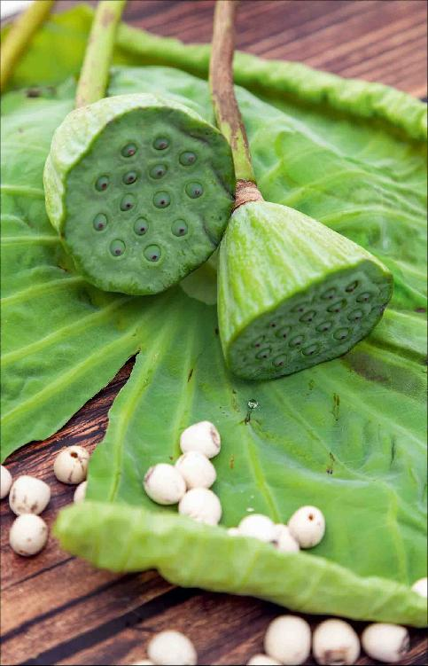
现在的人容易冒暑，除了暑热伤人外，还有一个原因就是贪凉。其实，单纯的暑热并不可怕，只有热加上湿才非常可怕，如果再加上人为带来的寒气（包括夏天的一切贪凉行为），这种种因素加在一起才是导致身体受伤害的一个主要原因，而且是最难解决的。
冒暑，属于轻症。当暑气侵袭了我们的体表后，一般表现为风热感冒，刚开始时人会感觉头昏脑胀，然后开始发热。在夏天如果自己发热了，就要想一想是不是冒暑了。
前面讲过，风热感冒跟风寒感冒有一个很简单的鉴别点：嗓子是否疼痛。得风热感冒嗓子痛，得风寒感冒嗓子不痛。
但在冒暑的初期，风热感冒刚起来的时候，嗓子痛可能不明显，只有一点干痒或痛。那这时候还有第二个鉴别点：看是否出汗。
如果得的是风寒感冒，人是一点汗都不会出的，而且特别怕冷。夏天的风寒感冒往往是在空调房里待得太久之后造成的。如果您有一点微微的出汗，也不太怕冷，这就是风热感冒——冒暑。这通常是在一冷一热的环境中切换造成的，比如，在夏天频繁进出冷气特别足的房间。
其实，在夏季时我建议大家消暑喝的银花甘草茶，就有预防冒暑的作用。
当冒暑再进一步发展的时候，暑气就会进入体内，伤害肠胃。这时候，有的人会肚子痛、拉肚子，有的人会口干舌燥特别想喝水；有的人会觉得恶心、呕吐，这就是冒暑引起了肠胃型感冒。
如果暑气已经进入肠胃，引起了腹痛、腹泻，甚至呕吐等症状，同时又伴有轻微的发热、出汗，那么，就可以用中成药藿香正气水了。
藿香正气水在夏天是最受大家欢迎的，但您要记住，它是用来治疗肠胃型感冒的，不是用来解暑的。如果您只是觉得天气很热，身体没有出现肠胃型感冒的症状，您千万不要用藿香正气水。
有些小孩子或者年轻人可能不喜欢藿香正气水的味道，那就用姜片和香菜煮一碗汤，然后配上大暑节气的食方甜杏仁拌茴香来调理肠胃型感冒。如果是轻微的肠胃型感冒，直接吃甜杏仁拌茴香就有调理作用。
前面说过，暑气伤人按照程度深浅，从浅到深依次是冒暑、伤暑和中暑。但它们并不是一个依次发展的过程，有时候从冒暑就可以直接发展到中暑。
在以前没有空调的情况下，夏天中暑的人很多。现在的生活条件比以前好了很多，中暑的人比较少了，但我们要预防“隐形中暑”。
有一种中暑是需要我们警惕的，就是夏天在户外剧烈运动以后（如打篮球），马上喝冰镇饮料或水，虽然会觉得很爽快，但这完全不能解暑，反而可能会使人中暑，非常危险。
当身体感觉很热的时候，血液都集中在体表，这时候内脏正处于一种缺血的状态，如果马上喝冰镇饮料，就会使血管快速收缩。血管收缩是没有办法去帮助人体散热的——人体要想散热必须通过血液循环来进行，这实际上是干扰了人体的散热，严重的还会引起血管痉挛，引发心绞痛。
夏天在运动后，如果想要降温、解暑，其实最简单的还是传统的方法，喝温开水。
喝温热的茶水更好。喝了温热的水，身体会出一些汗，通过出汗热就排出来了，体温也就降下来了，这是最快速的运动后降温的方法。
如果您在运动中出了大量的汗，那么可以在热茶水里加一点盐，以补充因运动大量出汗而丢失的电解质。
很多朋友觉得现在过夏天有空调、冰饮，可能就不会出现以前人们常见的中暑了，其实不然，这种隐形的中暑是最容易让年轻朋友中招的。
中暑是有征兆的，中暑的四个征兆是汗、喘、快、晕，是一个逐步加重的过程。
我们可以根据中暑的四个征兆来自己鉴别。
第一个征兆就是出汗。
汗出得就像洗了个澡一样，衣服都湿透了，这时候的体温会升到37℃以上。
这也是很多人在运动以后最常见的一种情况。实际上，这已经是中暑的先兆了，所以要特别警惕，不能随意去解暑。
第二个征兆就是喘。
这时候人的呼吸会非常急促，气喘吁吁的。
这正是身体在通过自己的方式来呼出热量，由于人的体温会继续上升，脸会通红。
到了这个阶段，就要特别注意了，千万不能喝冰饮，也不能马上进入有空调的房间去吹冷风，而是要到阴凉、通风的地方让身体自然降温，以及喝温热的茶水。
第三个征兆就是心跳加快。
这时候心脏一分钟能跳170〜180下，因为心脏要快速泵血，以帮助身体尽快地散发热量。这个阶段有心脏病发作的危险。
第四个征兆就是高热，头晕眼花。出现了这个征兆就是非常严重的中暑了。
这个阶段跟最轻的第一阶段恰恰相反，第一阶段是大量出汗，而这个阶段出汗都很困难了，基本上不出汗，如果出汗也是冷汗。这个时候您摸额头还会发现额头是冰凉的，但浑身却滚烫，体温达到了40℃以上。
此时，您千万不要以为自己是高热了，这个很可能就是中暑了，而且是严重的中暑。
在这么高的体温下，人会感觉到头痛、头晕，严重的还会昏迷。
有军训经历的朋友都会知道，在烈日下军训人会很容易晕倒，这就是中暑导致的昏迷。这种情况下，一定要先把中暑的人的上衣赶快解开，然后再把人移到阴凉、通风的地方，送医急救。
在身体出现第一、第二个征兆的时候，我们可以通过喝温开水、茶水自然降温来缓解，不要喝冰镇饮料，不要把空调开到最低温猛吹。这会封闭人体的体表毛孔，让汗不能及时排出，使暑气出不去，导致迅速进入中暑的第三阶段——心跳加快，有心脏病发作的危险，甚至进入第四阶段——头晕眼花，昏迷不醒。
很多时候，现代人的中暑是由自己造成的，本来在第一、第二个征兆出现的时候，还可以自我缓解，但由于采取了不当的措施，结果造成了中暑的进一步加重。
请记住，夏天要想解暑，冰镇饮料对人毫无帮助，反而可能有伤害，而一杯传统的温热茶就可以帮助我们解决暑气伤人的问题。
前面说过，暑气伤人最轻的程度是冒暑，最重的是中暑，但中间还有一个潜伏时间最长，也是最容易被我们忽视的，那就是伤暑。
冒暑属于轻症，比冒暑程度更重的就是伤暑。伤暑有一个特点：不在当时发作。虽然冒暑会导致风热感冒、肠胃型感冒，但它都是当时发作，我们当时就可以对症调理。而伤暑有一个很长的潜伏期，它可以潜伏到秋天，甚至冬天才发病。
如果只是被暑气所伤，那么很可能表现为冒暑，就是风热感冒或者肠胃型感冒，但被暑气所伤之后采取了不正确的降暑方法（吹空调、喝冰镇饮料），那么就有可能造成伤暑。
其实，古人也会伤暑，因为那时候也有很多人会贪凉。
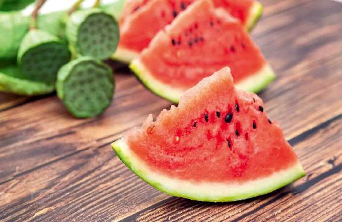
古人贪凉是怎么做的呢？就是夏天会把床搬到屋外去，露天睡觉，这种情况下很多人也会伤暑。
现在一些年龄大一点的朋友，可能在小时候都有过这种经历。夏天热得受不了，就把床搬到屋外露天睡觉，这样一来就容易造成伤暑，有些人的胃病就是这样落下的。
夏天即便再热，屋外的晚上也是夜露风凉，特别是夜露，它的湿气对人体的伤害是非常大的。一些在屋外露天睡觉的人后来都有一个胃寒的毛病，他们还不知道是怎么回事，实际上，就跟夏天夜里贪凉有关系。
现在的人就更不得了了，因为基本上家家户户都有空调，特别是在城市，在夏天晚上睡觉坚持不开空调的人已经非常少了，因此，现在人的体温调节能力都非常差。天气稍微一热就觉得受不了了，必须要开空调；天气稍微一冷，又觉得受不了了，要多穿衣服。
其实，人体本身是有调节体温能力的，一个非常健康的人，在夏天是不会觉得非常热的，在冬天只要正常穿衣服，也是不会觉得非常冷的。
我认为夏天天热必须开空调的这样一个想法，是不妥的。因为自然界再热，人体都有适应的能力。现在夏天由于人们普遍吹空调，导致很多人伤暑，而这种伤暑，在当时并不会表现出来，它会一直潜伏到秋天、冬天再发病。
人体是通过出汗来散热，通过出汗来排毒的。如果在夏天的时候，由于贪凉没有好好地出汗，那病邪必然就被压抑在了体内，排不出去，这样等到秋风一起，天气转凉的时候，人体一受寒就会发病。因此，很多人会在秋冬季节感冒，表现为高热、浑身酸痛，这就说明人在夏天伤暑了。
还有一些人，他们在夏天会觉得一会热一会冷，很不舒服。如果不开空调人就觉得心烦意乱、很热，开了空调又感觉冷飕飕的。这种表现在大暑节气比较明显，这也是伤暑了。这种伤暑潜伏期比较短，当时就会发作出来。
要想预防伤暑，就要知道天气热其实并不可怕，这是老天爷给我们的，我们并不需要去对抗它，只需去顺应它。
可怕的是什么呢？是从空调里吹出来的凉气。尽管它会让我们当时很舒服很痛快，但因为它不是自然风，会非常硬、非常阴寒，对人体的伤害非常大。
“炎热者，天之常令”，夏天的炎热是自然界的正常规律，我们要去顺应、接受它。“当热不热，必反为灾”，如果应该热的时候不热，反而会变成一个灾害。
夏行冬令是养生大忌，希望大家都能记住。
湿气比热气伤人更重，中医怎么形容湿气伤人呢？往往喜欢用一个“困”字。什么意思呢？就像人穿了一身厚厚的衣服，然后又被大雨给淋得透湿，这样一身湿厚衣服包裹在身体上的感觉，就叫作“困”，也就是把身体功能给困住了，再加上夏天的热气，人就会感觉到特别困和疲乏，所以就会“夏打盹”。
实际上，三伏天的时候，夏打盹是最明显的，整个人都会感觉懒洋洋的，不想说话不想动，有的人甚至觉得连思考问题都很困难，身体非常沉重，头脑也很昏沉；有的朋友是一直出汗，或者手脚发热、双腿浮肿；还有的人是便秘。
到了夏天的最后阶段，夏打盹的症状会更加明显，这也是暑气伤人伤到心脏功能的一种表现。
其实，这样的一些夏季常发症状，我们都能用黄芪来化解。
夏天的这种乏，都是气虚的表现，特别是您在贴了三伏贴以后，会感觉人更困乏了，更没力气了，这说明您平时就有气虚的现象，就更需要喝黄芪粥了。
三伏期间，我推荐普通人的进补量是每人每天30克黄芪。
如果您感觉贴三伏贴以后气更虚了，或者是夏打盹的现象特别明显，或者是出汗特别多，那么，您可以把黄芪的量增加到45克或者60克都是可以的。只要您喝了以后感觉没有影响胃口，那就是合适您的剂量。
为什么呢？因为黄芪会把身体的气补得很足，当气补得太足、过量的时候，人就会感觉好像没有那么想吃东西，总是饱饱的，这种情况就是黄芪用得过量了。
如果气补过量了，喝一两次陈皮水就可以解除，因为陈皮是理气的。
其实，暑气不仅会伤到我们的心脏功能，它还会困住五脏的功能，最为典型的就是脾胃功能也变弱了。很多人在夏天不爱吃油腻的东西，就是因为脾胃的功能被困住了。
夏打盹只是暑气伤人的第一步，再往下发展，脾胃的功能也会被困住，之后就会困住肝胆的功能，这样一来就会发展为疰夏。
疰夏是一种时令病，也是夏天的一种常见病，民间又把它称为苦夏。
它有什么表现呢？就是疲倦、昏睡、头晕、胸闷、恶心，没有胃口，不想吃东西。
疰夏这种现象，在很多人身上都会发生，只是程度深浅不同。大多数人都不会把它认为是一种病，都以为是天气太热的缘故，其实，这已经是一种病了，一定要对它重视起来。
有些身体虚弱的人，每到盛夏时节疰夏就会发作，有这种情况的人，要更加注意调理。
怎么调理呢？提前在初夏和仲夏就为过盛夏做好充分的准备，把身体基础打好。
我们在夏天刚到来时喝的姜枣茶、吃的核桃壳煮鸡蛋，以及端午节吃的新蒜煮蛋和咸鸭蛋，等等，这一系列的食方，都是在循序渐进地调理我们的身体。它们不仅在当时当刻对身体好，就是到了后面的时节，对身体对抗湿气仍然大有帮助。
怎么来预防暑气伤人呢？首先是要去心火，其次是祛湿。
在小暑节气，我们已经用了一些食方来去心火，帮助身体清除血毒、热毒和光毒。
到了大暑节气，我们要进一步用各种辛凉的食物来帮助身体发散风热，同时还要重点进行祛湿工作。
有哪些食物可以帮我们来对抗暑热呢？金银花、薄荷、茴香、甜杏仁、荷叶、黄芪、茯苓，这些食物都是适合夏天来吃的，它们分别通过补气、散寒、清热、祛湿、解毒等不同作用来调理我们的身体，让身体不惧夏天的暑热。
大暑节气为了防止暑气伤人，我们要喝一道茶饮——银花甘草茶，吃一道凉菜——甜杏仁拌茴香。
要准备的原料有金银花、甘草和甜杏仁、小茴香菜。前两种材料是为茶饮准备的，后两种材料是为凉菜准备的。
要记住，这个甜杏仁不是超市里卖的那种大杏仁。事实上，大杏仁不是杏仁，而是扁桃仁，我们要买的甜杏仁是中国本土的小杏仁。
这种小杏仁您去超市购买就可以了，不要到药店去买，因为药店里卖的杏仁，通常都是苦杏仁。虽然苦杏仁是一味很好的中药，但是它有微毒，不可以当成食物来吃，而超市卖的小杏仁是可以放心来食用的。
小茴香菜在菜市场就可以买到。
金银花在小满节气的时候，我提醒过您，那时候金银花盛开，您可以采摘一些晾干备用。如果您家里没有准备金银花，也没关系，到超市、茶叶店或者药店都很容易买到金银花（干品）。
1.选头茬花
金银花每年能开好几茬。头茬花是在小满前开，这一茬花的药性是最好的。而且后面天气热了，金银花植株容易生虫，到二茬花时可能就得打药了。
2.选绿条，不要掺杂了绿叶、白条的
金银花在开放过程中，颜色会变化：花蕾由绿转白，花开后由白转黄。初期的绿色花蕾有效成分含量高，称为绿条，用来做高级茶饮。后期的白色花蕾比较便宜，称为白条。而混杂着已开花朵甚至绿叶的，就更次了，一般是不要的。
3.选无硫烘干的
作为商品的金银花采摘后要马上烘干。不要土烘房烘干的，那种是用炭火，硫会超标。
4.同样体积，选重量轻的
金银花是高级茶饮，价格贵，某些不法商贩为了多卖钱，会通过兑水、掺土，甚至掺铁粉来增加重量。所以选金银花时，可以分别抓同样大小的一把来称一下，一般重量轻的比较好；重的，可能有掺杂。
新鲜的金银花不适宜久泡，冲泡的时候，开水的温度也不宜太高，最好不要盖壶盖，这样才不会把金银花给泡“死”。
这道茶饮特别适合小孩子来喝，因为它还有一个好处，就是可以预防一些夏天小儿常见传染病。
在新冠肺炎疫情期间，北京市中医药管理局发布的儿童预防方，也用到了金银花。
金银花和甘草都是有抗病毒作用的，加在一起以后，清热解毒的效果会很好，对于夏天的一些温热性传染病有一定的预防作用。因此，这道茶饮是适宜全家老小一起来喝的，不仅大暑节气，整个盛夏都是可以喝的。
金银花有点寒凉，所以我家喝金银花必配甘草，可以保护脾胃。甘草多一点，能调和金银花的苦味，孩子更爱喝。
这道茶饮相对比较平和，但有没有不适宜喝的人呢？
如果您在夏天吹了空调后得了风寒感冒，那您就暂时不要喝银花甘草茶；如果患的是风热感冒，可以喝，因为金银花清除风热的效果很好，常用来治疗温病发热。
我曾经讲过怎么样来区分风热感冒和风寒感冒，其中最重要的一点就是看嗓子是否痛。如果嗓子痛，那就是风热感冒，可以喝银花甘草茶；如果嗓子不痛，反而挺怕冷的，那就是风寒感冒，暂时就不要喝银花甘草茶。
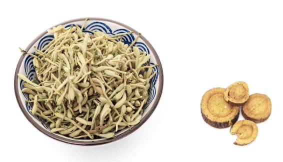
原料：干品金银花10〜30克，或鲜品1大把，生甘草3〜10克。
做法一：
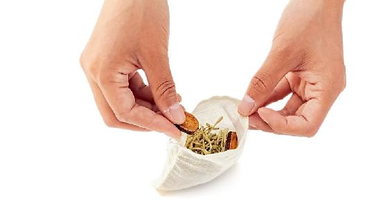
1.金银花和甘草一起放进茶壶，冲入沸水，1分钟后倒掉。
2.再次冲入沸水，闷10分钟左右饮用。
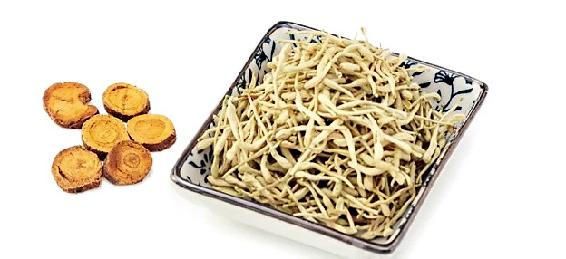
做法二：
1.先用开水把甘草烫洗一下，放入茶壶，冲入少量的沸水，闷10分钟左右。
2.把洗干净并沥干水分的新鲜金银花放入茶壶，冲入70〜80℃的水，不要盖壶盖，泡5分钟左右，之后就可以喝了。
功效：
清凉解暑、清热解毒，预防日光性皮炎，预防小儿传染病。
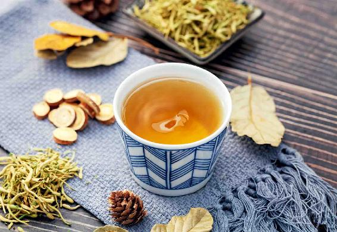
允斌叮嘱：
1.这道茶饮可以反复冲泡，直到没有味道为止。 用这两种方法泡出来的茶饮都是可以喝一天的，清凉解暑的功效也差不多。
2.如果是新鲜的金银花，冲泡不要用沸水，也不宜久泡。
3.这个量是比较大的，可以全家一起喝。如果暑热特别严重的话，您也可以一天全家人泡两壶。金银花有青色花蕾（绿条）、白色花蕾（白条）。纯绿条金银花药性比较足，可用10克金银花配10克甘草。
4.金银花有苦味，怕苦的人可以多加甘草。如果小孩子不喜欢甘草的味道，您可以往银花甘草茶里加一点蜂蜜调和一下，再给他喝。
5.女性经期、风寒感冒期间停饮。
这道茶对于夏季常见的皮肤问题也有预防和调理作用。
甘草除了健脾益气之外，还能够修复敏感和老化皮肤。当皮肤屏障被破坏、反复发作皮炎时可以用它来补养皮肤，内服、外用，效果都很好。
金银花清热解毒，能够消除各种肿毒。夏天日晒、过敏、湿疹，皮肤出现红肿、皮炎等问题，可以喝银花甘草茶来调理。此时用量要加倍，效果才好。
读者评论：每天给儿子喝银花甘草茶，痤疮都没了
A芬Fen ：银花甘草茶真是不错，先苦后甘，好像还有修复皮肤的功能。
张亿歌：我因为贪吃樱桃，嘴里肿了个大脓包，喝了几次银花甘草茶消肿了。
vivian ：孩子膝盖有左右对称的癣，有时痒，已经一年多了，喝了银花甘草茶，明显好了很多。
雨☀：我儿子最近脸上长痘，我让他每天都喝银花甘草茶，最近好像好些了。
立地成影：这两天嗓子疼得厉害，话都说不出来了，痰也是黄的，有些上火。单位开着空调，又着凉了，内热外寒太难受了。晚上回家泡了一壶银花甘草茶，没想到第二天早上就好转了，嗓子也不那么痛了。
年轻人这么近那么远：我每天泡一杯银花甘草茶给儿子喝，一段时间后，他脸上好几年的痤疮竟然都没了，儿子非常高兴。
佚名：22号至23号天特别热，那两天都喝这个茶，晚上睡得特别实。白天虽然是大汗淋漓，但是没有那种热的没精神和其他的一些不适，要是往年可能会虚脱了或者头晕等，现在是精神大大有！
允斌解惑：小孩子可以喝银花甘草茶吗？
水泽木兰：银花甘草茶里可以加蒲公英根吗？
允斌：可以。蒲公英根有消肿毒功效。
刘晚香：小孩子可以喝银花甘草茶吗？
允斌：可以，我就是从小喝到大的。
珍：银花甘草茶可以加罗汉果吗？
允斌：可以。这样可以增加祛湿热的效果，而且喝起来更清甜。
Amy易雪：我家4岁宝宝怕苦，喝不进去银花甘草茶，怎么办？
允斌：可加蜂蜜或罗汉果调味。
Cherry：银花甘草茶里可以加牛蒡吗？
允斌：可以的。
巴黎没有圣母院：金银花和甘草我都是放同等的量，这个可以吗？
允斌：可以的。我常用30克甘草煮水，冲泡30克金银花，和儿子一起喝。甘草量大是为了养皮肤。
波儿 ：银花甘草茶用保温杯泡，是喝完一杯就可以了，还是可以反复泡，直到喝的没了味道？
允斌：可以反复泡。
A芬Fen：泡银花甘草茶，我没有精准到克数，都是随便抓一点泡的，不知这样是否可以？
允斌：可以的。我也是抓一把。金银花是药食同源的，用量不用非常精确。
春暖花开：女性经期能否喝银花甘草茶？
允斌：金银花有点寒凉，女性经期不宜喝。
大暑节气有一道可以预防肠胃型感冒的食方，那就是甜杏仁拌茴香。
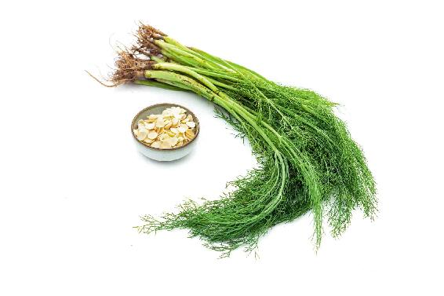
原料：甜杏仁、小茴香菜。
做法：
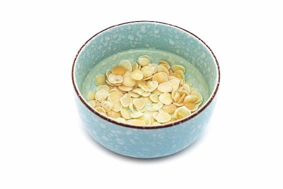
1. 先把甜杏仁用水泡软。（如果是从超市买的泡好的甜杏仁，那就不用泡了。）
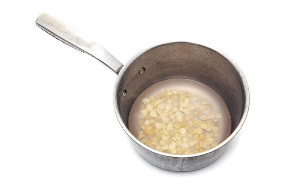
2. 把甜杏仁清水下锅，水开以后煮上10分钟，然后捞出备用。
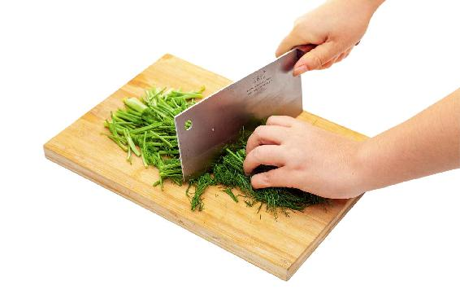
3. 取鲜嫩的小茴香菜，洗干净切碎放入盘中，加入煮好的甜杏仁，再以2:1的比例放入酱油和醋，也就是两份的酱油加上一份的醋，拌匀就可以了。
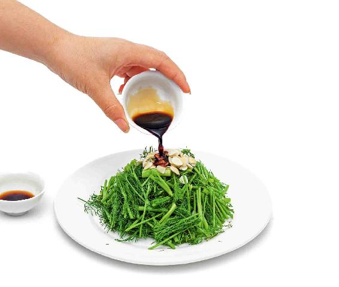
允斌叮嘱：
1. 喜欢吃辣的朋友，您还可以放入辣椒、花椒，但有一点要注意：不要放白糖，否则会影响这道凉菜的功效。
2.甜杏仁拌茴香不仅可以清暑，对预防夏天的肠胃型感冒也有效果。
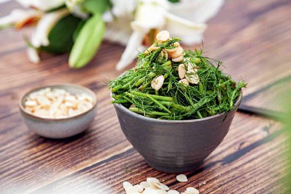
我分享的这道茶饮和食方，它们不仅可以清除大暑节气的湿热，还可以预防夏天的风热感冒。
大暑节气，由于天气特别闷热，有些朋友会在有空调的房间和室外闷热的环境下来回地进出，使人体调节体温的能力失调，这个时候就很容易得风热感冒。
大暑可以说是夏天最难熬的一个节气，但物极必反，这也是夏天的最后半个月，再往后就是立秋节气了。
盛夏，请尽量不要去贪图空调房的凉爽，而要尽量与天地合一，让身体去适应自然环境的气温，这样身体调节体温的能力才会增强。